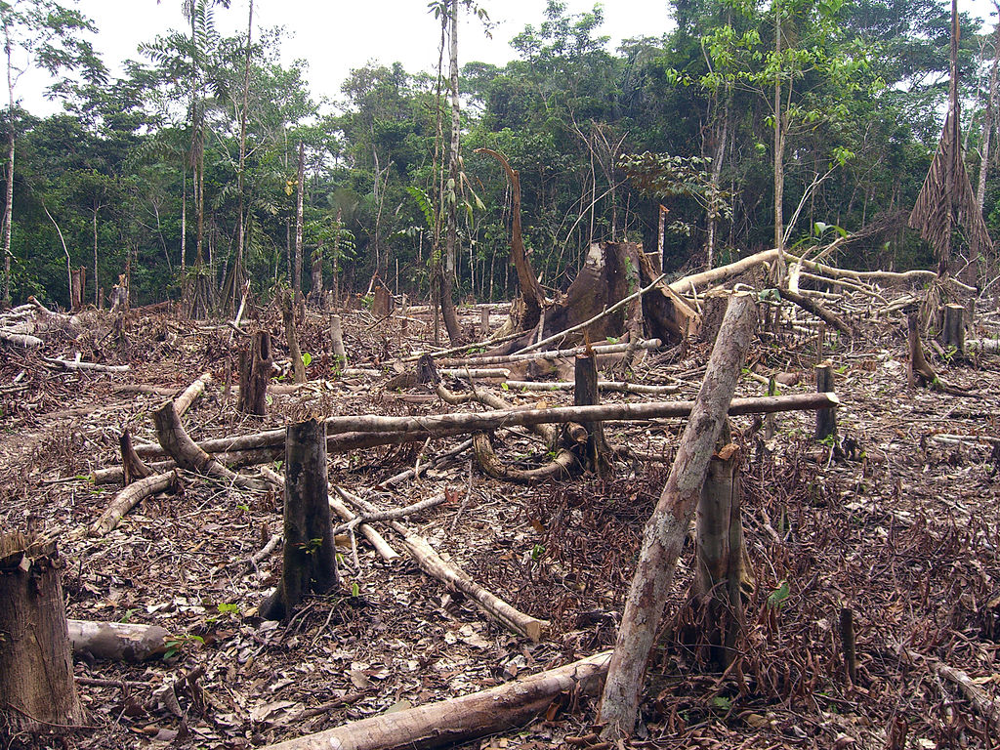
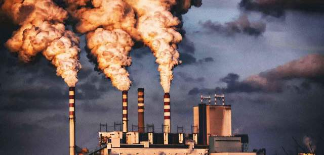

Causas Principales

Incremento de temperatura

Deforestación

Emisiones de CO2

Quema de combustibles fósiles
El deshielo en el Ártico es una de las consecuencias más visibles del cambio climático. Su estudio es fascinante porque revela cómo el aumento de la temperatura global está transformando rápidamente uno de los ecosistemas más frágiles del planeta.
Incremento de temperatura

Deforestación
Emisiones de CO2

Quema de combustibles fósiles
El Ártico se calienta casi cuatro veces más rápido que el resto del planeta
El hielo marino de verano ha disminuido un 40% desde 1980.En Venus un día dura más que un año
El deshielo libera metano atrapado en el permafrost, un gas de efecto invernadero muy potente
| Extensión mínima del hielo en el Ártico | ||
|---|---|---|
| Año | Extensión mínima del hielo (millones de km²) | Observaciones |
| 2000 | 6.3 | Valor de referencia |
| 2020 | 3.8 | Reducción significativa |